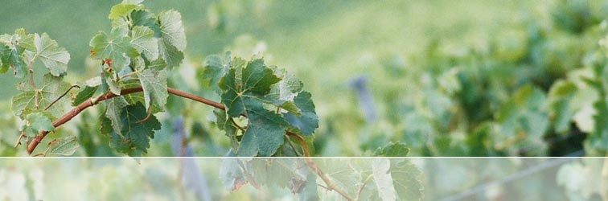
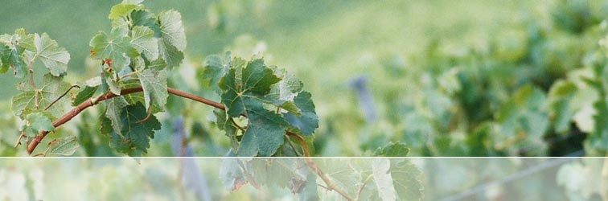

Although production is limited, the 2005 MAX V is now
available to all wine
enthusiasts and advocates of small batch winemaking.
Please register your interest
by contacting info@rocwines.com.au
or visit our ORDERING PAGE
for further details.
Member's Login Page
Proceed to members section – with Behind the scenes, winemakers notes, barrel sample analysis, interviews
and a comprehensive photo gallery.
CHIEF WINEMAKER
"Winemaking is not entirely based on a scientific approach but surety. The ability to ensure the best fruit, the best oak and attention to detail in the entire production process will eventuate in a product that will always over deliver in quality. Joining the passionate team at Robertson of Clare, Clare Valley wine growers and distinguished French cooperages will only make these objectives easier to achieve". (Simon Gilbert)
FIVE GENERATIONS OF WINEMAKERS
Simon Gilbert is a fifth generation winemaker, his great-great-grandfather, Joseph having planted the very first vines at Pewsey Vale in South Australia in 1841. The area was actually named after the Vale of Pewsey where Joseph lived in England. Joseph's wines quickly gained recognition internationally and in Australia. In particular his Riesling and Claret.
Yalumba and Geoff Angas Parsons replanted and re-established Joseph Gilbert's original Pewsey Vale vineyard in 1963. In 1967 Windy Hill-Smith invited the Gilbert family to Yalumba, to sample a pre-release of the first vintage of the new Pewsey Vale Riesling. Simon attended as an eleven-year-old and it was a turning point in his life "I'm not sure if it was the quality of the wine or the sense of occasion, but I knew I wanted to be a winemaker from that day on". (Simon Gilbert)
120 years after Joseph Gilbert's first vintage, Simon's path was set.
Following this early decision, Simon commenced as a cellar hand at Leo Buring (Lindemans) in 1973 aged 18. Lindemans fostered his ambition and sponsored Simon through his training at Roseworthy College. The next ten years were consumed by an enviable grounding in winemaking, including production of Lindemans Coonawarra, Padthaway and Rouge Homme Coonawarra Labels.
THE AWARD WINNING ARROWFIELD WINERY
In 1984 Simon was offered the reins of the Arrowfield winery and vineyards. He oversaw the turn around of the label (from a bulk to premium producer) in the late 1980s. At Arrowfield, Simon had control of the wines produced and creative freedom over the techniques used. He soon became noted in the press as an "adventurous" and "bold" winemaker. Simon took Arrowfield from a sole trophy winner between 1968-84 to 23 trophies and over 700 gold medals in just 8 years.
Simon's mix of technical capacity (which has led to some benchmark, classic-styled wines) and desire to innovate has resulted in being awarded more than 40 trophies and 1400 medals.
As a graduate in 1977 from South Australia's Roseworthy Agricultural College alongside very respected industry winemakers such as Peter Taylor (Southcorp) and James Godfrey (Seppelt), Jeffrey Grosset and Greg Clayfield (Rouge Homme) it is no wonder that he has earnt his respect and become a high profile winemaker in Australia.
WHAT THE REVIEWS SAY
"Simon is a consummate winemaker reveling in his splendid new home, expect greater things from him in the future and certainly visit his magic place soon". Tom Hardy, author of "Australian and New Zealand Wine and Food Pictorial Atlas"
"I would consider Simon to be in the limited number of the very top bracket of Australian winemakers with a perceptive and analytical palate to match his technical skills". Brian Croser, Chief Winemaker, Petaluma Limited
"Not many in Australia can claim to be fifth-generation winemakers who have wine running through their veins". Alan Hill, Winestate Magazine.